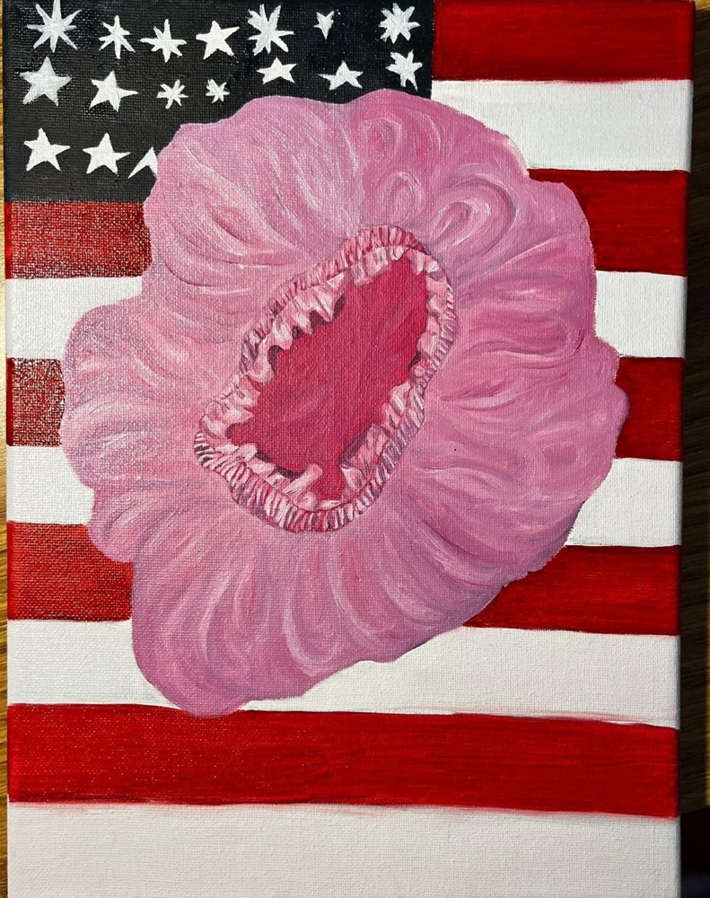
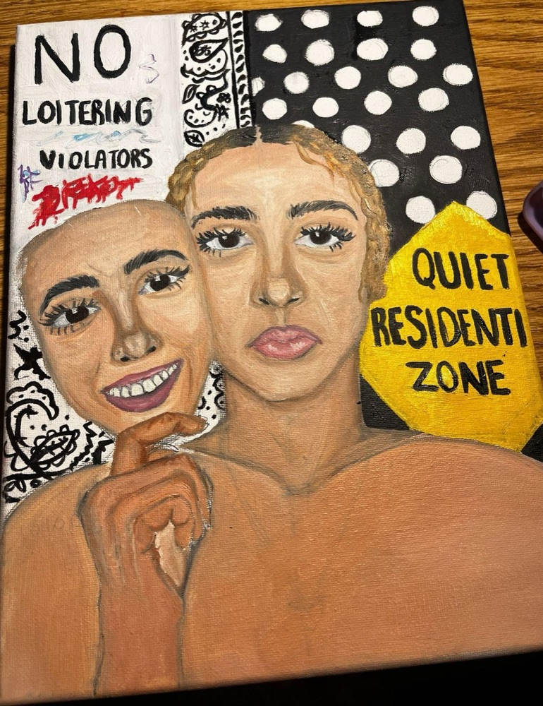

Independent study · Spring 2025 (revised November 2026)
Prompting with AI: How ChatGPT Shapes the Creative Process
An autoethnographic study where I used ChatGPT as a source of drawing prompts across five art projects and
documented what those prompts did to my work. Early prompts leaned on Eurocentric defaults, like yoga poses
for gesture and Western color associations, so I shifted the study toward prompting itself as a skill and
built a six-category rubric to compare prompts over the semester. The findings shaped what became Itera Studio.

Boundaries of Belonging, from the color theory project. I kept ChatGPT's "dramatic" palette but replaced its suggested scenes with my own subject.

Self-portrait from the self-expression project, using signs and patterns from the loud and quiet places I grew up between.
A paper on the ethics of generative AI in art, looked at through power, accessibility, accountability, and
representation. It covers the environmental cost of these systems, how much AI infrastructure sits with a few
large firms, how exposed artists are to labor disruption, and how paywalls and media literacy shape who
benefits. I argue that generative AI is neither entirely good nor entirely bad, and that its impact depends on
whether consent, sustainability, and inclusive decision-making come before efficiency and profit.
A one-page comic that starts with a trip to Micro Center, where several employees came up to help my
boyfriend and no one asked me if I needed anything. I then interviewed a friend, my mom (a teacher), and my
boyfriend about whether technology and tech spaces feel made for them, and the three quote panels come from
those conversations. Exclusion showed up differently for each of us: in how people treat you, in the
expectation that you should already know how to use everything, and in tools built without you in mind.
Tap the comic to open it full size.Panel-by-panel description and text
My boyfriend and I walk down a Micro Center aisle lined with boxed computer parts. Caption: "A while ago I went to Microcenter with my BF…"
I stand in the foreground with my arms crossed and an unhappy look, while behind me an employee talks with my boyfriend. Caption: "We went our seperate ways and browsed the store. Several employees came up to him, but not once was I asked if I needed anything, and it left a bad taste in my mouth.."
I'm on the phone against a purple halftone background. On the right, my mom answers from her kitchen, holding a spatula. Caption: "I wanted to ask my friends and family if they had similar experiences, and everyone's answers were completely different."
My friend is driving. On the right, my boyfriend shrugs with one hand raised. Caption: "Some of my friends are assumed to be competent. Others feel like they are being judged before they can ask questions."
Red quote panel, from my friend: "It feels like Im expected to already know how to use everything."
Blue quote panel, from my mom: "Most educational platforms aren't designed by teachers."
Green quote panel, from my boyfriend: "I usually just figure stuff out, I've never really had to prove myself."
Forthcoming
Itera Studio technical write-up (senior comprehensive paper), in progress.
Memo on AI disclosure rules in creative industries.